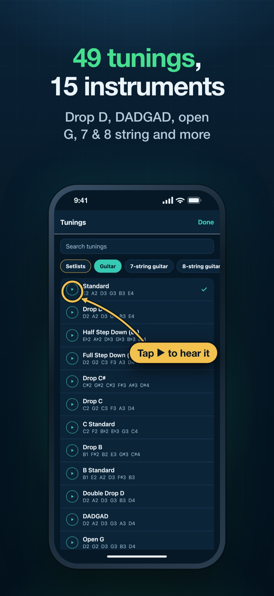

Guitar tunings chart: notes and frequencies
Standard guitar tuning is E A D G B E, low string to high, and at A4 = 440 Hz the strings sit at 82.41 Hz, 110.00 Hz, 146.83 Hz, 196.00 Hz, 246.94 Hz and 329.63 Hz. Below are the notes and frequencies for every other common tuning too: drop tunings, lower standards, open tunings, DADGAD, Nashville, and 7- and 8-string guitars.
Every table starts with the thickest string and goes across to the thinnest. Notes use scientific pitch notation, where middle C is C4, and frequencies are rounded to two decimals.
Contents
- All 6-string tunings at a glance
- Standard tuning (E A D G B E)
- Drop tunings: Drop D, Drop C♯, Drop C, Drop B, Double Drop D
- Lower tunings: Half Step Down, Full Step Down, C Standard, B Standard
- Open tunings: G, D, D minor, E, A, C
- DADGAD
- Nashville tuning
- 7-string guitar tunings
- 8-string guitar tunings
- Bass, ukulele and other instruments
- How the frequencies are calculated
All 6-string tunings at a glance
Each tuning name links to its full table of notes and frequencies.
| Tuning | Notes, low to high |
|---|---|
| Standard | E A D G B E |
| Drop D | D A D G B E |
| Half Step Down (E♭) | E♭ A♭ D♭ G♭ B♭ E♭ |
| Full Step Down (D) | D G C F A D |
| Drop C♯ | C♯ G♯ C♯ F♯ A♯ D♯ |
| Drop C | C G C F A D |
| C Standard | C F B♭ E♭ G C |
| Drop B | B F♯ B E G♯ C♯ |
| B Standard | B E A D F♯ B |
| Double Drop D | D A D G B D |
| DADGAD | D A D G A D |
| Open G | D G D G B D |
| Open D | D A D F♯ A D |
| Open D Minor | D A D F A D |
| Open E | E B E G♯ B E |
| Open A | E A E A C♯ E |
| Open C | C G C G C E |
| Nashville | E A D G B E (strings 6 to 3 an octave up) |
Standard tuning (E A D G B E)
Almost all chord charts, tabs and lessons assume standard tuning unless they say otherwise. The low E string is 82.41 Hz and the high E is two octaves above it, at 329.63 Hz. The open A string is 110.00 Hz, exactly a quarter of the A4 = 440 Hz reference.
| String | Note | Frequency |
|---|---|---|
| 6 (low) | E2 | 82.41 Hz |
| 5 | A2 | 110.00 Hz |
| 4 | D3 | 146.83 Hz |
| 3 | G3 | 196.00 Hz |
| 2 | B3 | 246.94 Hz |
| 1 (high) | E4 | 329.63 Hz |

Drop tunings
A drop tuning lowers the 6th string by a whole step so the bottom three open strings form a power chord (root, fifth, octave) you can play with one finger. The lower drop tunings start from a guitar that's already tuned down and drop its 6th string one whole step further.
Drop D
Only the 6th string changes: it drops a whole step, from E to D. Everything else stays in standard, so your usual chord shapes on the top five strings still work. It's the easiest alternate tuning to get into and back out of, and it shows up in rock, metal, folk and fingerstyle.
| String | Note | Frequency |
|---|---|---|
| 6 (low) | D2 | 73.42 Hz |
| 5 | A2 | 110.00 Hz |
| 4 | D3 | 146.83 Hz |
| 3 | G3 | 196.00 Hz |
| 2 | B3 | 246.94 Hz |
| 1 (high) | E4 | 329.63 Hz |
Drop C♯
Half step down tuning with the 6th string dropped a further whole step. Common in hard rock and metal.
| String | Note | Frequency |
|---|---|---|
| 6 (low) | C♯2 | 69.30 Hz |
| 5 | G♯2 | 103.83 Hz |
| 4 | C♯3 | 138.59 Hz |
| 3 | F♯3 | 185.00 Hz |
| 2 | A♯3 | 233.08 Hz |
| 1 (high) | D♯4 | 311.13 Hz |
Drop C
Full step down tuning (D G C F A D) with the 6th string dropped another whole step to C. Shapes are the same as Drop D, two frets lower. Common in metal and heavier rock; many players move to heavier strings for it so the low string doesn't feel floppy.
| String | Note | Frequency |
|---|---|---|
| 6 (low) | C2 | 65.41 Hz |
| 5 | G2 | 98.00 Hz |
| 4 | C3 | 130.81 Hz |
| 3 | F3 | 174.61 Hz |
| 2 | A3 | 220.00 Hz |
| 1 (high) | D4 | 293.66 Hz |
Drop B
The whole guitar goes down a minor third (three half steps), then the 6th string drops a further whole step to B. At 61.74 Hz the low string is quite slack on a standard-scale guitar, so heavier strings or a longer-scale guitar help.
| String | Note | Frequency |
|---|---|---|
| 6 (low) | B1 | 61.74 Hz |
| 5 | F♯2 | 92.50 Hz |
| 4 | B2 | 123.47 Hz |
| 3 | E3 | 164.81 Hz |
| 2 | G♯3 | 207.65 Hz |
| 1 (high) | C♯4 | 277.18 Hz |
Double Drop D
Drop D with the high E string lowered to D as well, so both outer strings are D. Only the 6th and 1st strings change. It gives big, ringing D chords and is used in folk and rock.
| String | Note | Frequency |
|---|---|---|
| 6 (low) | D2 | 73.42 Hz |
| 5 | A2 | 110.00 Hz |
| 4 | D3 | 146.83 Hz |
| 3 | G3 | 196.00 Hz |
| 2 | B3 | 246.94 Hz |
| 1 (high) | D4 | 293.66 Hz |
Lower tunings
These keep the same intervals between strings as standard tuning, so every chord shape and scale pattern you know still works. Everything just sounds lower. Players tune down to suit a singer's range, to get a heavier sound, or to make string bends easier on slacker strings.
Half Step Down (E♭)
Every string goes down one half step, to E♭ A♭ D♭ G♭ B♭ E♭. Common in rock, blues and metal.
| String | Note | Frequency |
|---|---|---|
| 6 (low) | E♭2 | 77.78 Hz |
| 5 | A♭2 | 103.83 Hz |
| 4 | D♭3 | 138.59 Hz |
| 3 | G♭3 | 185.00 Hz |
| 2 | B♭3 | 233.08 Hz |
| 1 (high) | E♭4 | 311.13 Hz |
Full Step Down (D)
Every string goes down a whole step, to D G C F A D. A standard E chord shape now sounds as D.
| String | Note | Frequency |
|---|---|---|
| 6 (low) | D2 | 73.42 Hz |
| 5 | G2 | 98.00 Hz |
| 4 | C3 | 130.81 Hz |
| 3 | F3 | 174.61 Hz |
| 2 | A3 | 220.00 Hz |
| 1 (high) | D4 | 293.66 Hz |
C Standard
Every string goes down two whole steps, to C F B♭ E♭ G C. Common in metal and doom. Heavier strings are the usual choice here.
| String | Note | Frequency |
|---|---|---|
| 6 (low) | C2 | 65.41 Hz |
| 5 | F2 | 87.31 Hz |
| 4 | B♭2 | 116.54 Hz |
| 3 | E♭3 | 155.56 Hz |
| 2 | G3 | 196.00 Hz |
| 1 (high) | C4 | 261.63 Hz |
B Standard
Every string goes down a perfect fourth (five half steps), to B E A D F♯ B. Its 5th, 4th and 3rd strings land on E2, A2 and D3, the same notes as the bottom three strings in standard tuning. B standard is also where baritone guitars are commonly tuned.
| String | Note | Frequency |
|---|---|---|
| 6 (low) | B1 | 61.74 Hz |
| 5 | E2 | 82.41 Hz |
| 4 | A2 | 110.00 Hz |
| 3 | D3 | 146.83 Hz |
| 2 | F♯3 | 185.00 Hz |
| 1 (high) | B3 | 246.94 Hz |
Tip: when you retune, come up to each note from below. If you go past it, drop under and tune up again. Strings tend to stay put better that way than when you tune down onto a note.
Open tunings
In an open tuning the open strings play a chord on their own. Barring one fret moves that chord up, which makes open tunings popular for slide guitar, and they suit folk, blues and fingerstyle playing with droning open strings.
Open G
D G D G B D, a G major chord. From standard, the 6th, 5th and 1st strings each drop a whole step; the middle three stay put. Common in blues, rock and slide playing.
| String | Note | Frequency |
|---|---|---|
| 6 (low) | D2 | 73.42 Hz |
| 5 | G2 | 98.00 Hz |
| 4 | D3 | 146.83 Hz |
| 3 | G3 | 196.00 Hz |
| 2 | B3 | 246.94 Hz |
| 1 (high) | D4 | 293.66 Hz |
Open D
D A D F♯ A D, a D major chord. From standard, the 6th, 2nd and 1st strings drop a whole step and the 3rd string drops a half step to F♯. Used for slide, folk and fingerstyle.
| String | Note | Frequency |
|---|---|---|
| 6 (low) | D2 | 73.42 Hz |
| 5 | A2 | 110.00 Hz |
| 4 | D3 | 146.83 Hz |
| 3 | F♯3 | 185.00 Hz |
| 2 | A3 | 220.00 Hz |
| 1 (high) | D4 | 293.66 Hz |
Open D Minor
D A D F A D, a D minor chord. The same as Open D, except the 3rd string goes down a whole step to F instead of F♯.
| String | Note | Frequency |
|---|---|---|
| 6 (low) | D2 | 73.42 Hz |
| 5 | A2 | 110.00 Hz |
| 4 | D3 | 146.83 Hz |
| 3 | F3 | 174.61 Hz |
| 2 | A3 | 220.00 Hz |
| 1 (high) | D4 | 293.66 Hz |
Open E
E B E G♯ B E, an E major chord, and the same shape as Open D one whole step higher. This one tunes strings up instead of down: the 5th and 4th strings go up a whole step and the 3rd goes up a half step, which adds tension to the neck. Some players use Open D with a capo at the 2nd fret instead, which gives the same notes.
| String | Note | Frequency |
|---|---|---|
| 6 (low) | E2 | 82.41 Hz |
| 5 | B2 | 123.47 Hz |
| 4 | E3 | 164.81 Hz |
| 3 | G♯3 | 207.65 Hz |
| 2 | B3 | 246.94 Hz |
| 1 (high) | E4 | 329.63 Hz |
Open A
E A E A C♯ E, an A major chord, and the same shape as Open G one whole step higher. The 4th, 3rd and 2nd strings each go up a whole step, so like Open E it adds tension. Open G with a capo at the 2nd fret gives the same notes.
| String | Note | Frequency |
|---|---|---|
| 6 (low) | E2 | 82.41 Hz |
| 5 | A2 | 110.00 Hz |
| 4 | E3 | 164.81 Hz |
| 3 | A3 | 220.00 Hz |
| 2 | C♯4 | 277.18 Hz |
| 1 (high) | E4 | 329.63 Hz |
Open C
C G C G C E, a C major chord with a very deep low string. The 6th string drops two whole steps to C, the 5th and 4th drop a whole step, the 3rd stays on G, the 2nd goes up a half step to C and the 1st stays on E. Used in folk and fingerstyle.
| String | Note | Frequency |
|---|---|---|
| 6 (low) | C2 | 65.41 Hz |
| 5 | G2 | 98.00 Hz |
| 4 | C3 | 130.81 Hz |
| 3 | G3 | 196.00 Hz |
| 2 | C4 | 261.63 Hz |
| 1 (high) | E4 | 329.63 Hz |
DADGAD
DADGAD is named after its notes. From standard, the 6th, 2nd and 1st strings each drop a whole step. The open strings make a Dsus4 chord, which has no third, so it's neither major nor minor and works under both. It's closely tied to Celtic music and is common in folk and fingerstyle.
| String | Note | Frequency |
|---|---|---|
| 6 (low) | D2 | 73.42 Hz |
| 5 | A2 | 110.00 Hz |
| 4 | D3 | 146.83 Hz |
| 3 | G3 | 196.00 Hz |
| 2 | A3 | 220.00 Hz |
| 1 (high) | D4 | 293.66 Hz |
Nashville tuning
Nashville tuning uses the same note names as standard, but the 6th, 5th, 4th and 3rd strings are tuned an octave higher. You get it by stringing a guitar with the thin octave strings from a 12-string set; the B and E strings are the same as standard. The result is a bright, shimmering sound that's often layered with a standard-tuned guitar in recordings. It needs its own set of strings, so don't try to tune regular strings up an octave.
| String | Note | Frequency |
|---|---|---|
| 6 | E3 | 164.81 Hz |
| 5 | A3 | 220.00 Hz |
| 4 | D4 | 293.66 Hz |
| 3 | G4 | 392.00 Hz |
| 2 | B3 | 246.94 Hz |
| 1 | E4 | 329.63 Hz |
Note that the 3rd string (G4, 392.00 Hz) is the highest note in this tuning, higher than the 2nd and 1st strings.
7-string guitar tunings
A 7-string guitar is a standard-tuned guitar with an extra low string, usually tuned to B. Strings 6 to 1 are the same as on a 6-string guitar. They're most common in metal.
7-string standard (B E A D G B E)
| String | Note | Frequency |
|---|---|---|
| 7 (low) | B1 | 61.74 Hz |
| 6 | E2 | 82.41 Hz |
| 5 | A2 | 110.00 Hz |
| 4 | D3 | 146.83 Hz |
| 3 | G3 | 196.00 Hz |
| 2 | B3 | 246.94 Hz |
| 1 (high) | E4 | 329.63 Hz |
7-string Drop A
Only the 7th string changes: it drops a whole step from B to A. The same idea as Drop D on a 6-string.
| String | Note | Frequency |
|---|---|---|
| 7 (low) | A1 | 55.00 Hz |
| 6 | E2 | 82.41 Hz |
| 5 | A2 | 110.00 Hz |
| 4 | D3 | 146.83 Hz |
| 3 | G3 | 196.00 Hz |
| 2 | B3 | 246.94 Hz |
| 1 (high) | E4 | 329.63 Hz |
7-string Half Step Down
Every string down one half step, to B♭ E♭ A♭ D♭ G♭ B♭ E♭.
| String | Note | Frequency |
|---|---|---|
| 7 (low) | B♭1 | 58.27 Hz |
| 6 | E♭2 | 77.78 Hz |
| 5 | A♭2 | 103.83 Hz |
| 4 | D♭3 | 138.59 Hz |
| 3 | G♭3 | 185.00 Hz |
| 2 | B♭3 | 233.08 Hz |
| 1 (high) | E♭4 | 311.13 Hz |
8-string guitar tunings
An 8-string guitar adds a low F♯ below the 7-string's low B. The top seven strings match 7-string standard tuning.
8-string standard (F♯ B E A D G B E)
| String | Note | Frequency |
|---|---|---|
| 8 (low) | F♯1 | 46.25 Hz |
| 7 | B1 | 61.74 Hz |
| 6 | E2 | 82.41 Hz |
| 5 | A2 | 110.00 Hz |
| 4 | D3 | 146.83 Hz |
| 3 | G3 | 196.00 Hz |
| 2 | B3 | 246.94 Hz |
| 1 (high) | E4 | 329.63 Hz |
8-string Drop E
The 8th string drops a whole step from F♯ to E. That puts it at 41.20 Hz, an octave below a 6-string guitar's low E and the same note as the low E on a 4-string bass.
| String | Note | Frequency |
|---|---|---|
| 8 (low) | E1 | 41.20 Hz |
| 7 | B1 | 61.74 Hz |
| 6 | E2 | 82.41 Hz |
| 5 | A2 | 110.00 Hz |
| 4 | D3 | 146.83 Hz |
| 3 | G3 | 196.00 Hz |
| 2 | B3 | 246.94 Hz |
| 1 (high) | E4 | 329.63 Hz |
In Big Tuna: every tuning on this page is built in. Pick one and tap play to hear the whole tuning before you start, or hold a string to hear its reference note. With Big Tuna Pro you can also make your own tunings, string by string, for any instrument.
Bass, ukulele and other instruments
Big Tuna also has tunings for 4-, 5- and 6-string bass, ukulele (soprano, concert and tenor), baritone and bass ukulele, banjo, tenor banjo, mandolin, violin, viola and cello, plus a chromatic mode for any note. Here are the two standard tunings people ask about most.
4-string bass standard (E A D G)
The same notes as the four lowest strings of a guitar, one octave down.
| String | Note | Frequency |
|---|---|---|
| 4 (low) | E1 | 41.20 Hz |
| 3 | A1 | 55.00 Hz |
| 2 | D2 | 73.42 Hz |
| 1 (high) | G2 | 98.00 Hz |
Ukulele standard (G C E A)
Standard ukulele tuning is re-entrant: the 4th string, G, is tuned higher than the 3rd string, C, instead of lower. That's why the table isn't in pitch order. Low G tuning swaps in a G an octave down (G3, 196.00 Hz).
| String | Note | Frequency |
|---|---|---|
| 4 | G4 | 392.00 Hz |
| 3 | C4 | 261.63 Hz |
| 2 | E4 | 329.63 Hz |
| 1 | A4 | 440.00 Hz |
How the frequencies are calculated
All frequencies here use twelve-tone equal temperament with A4 tuned to 440 Hz, which is the usual reference for guitar tuners. Each half step multiplies the frequency by the twelfth root of 2 (about 1.0595), so a note n half steps above A4 is 440 × 2n/12 Hz, and a note below A4 uses a negative n. Going up an octave doubles the frequency: A2 is 110 Hz, A3 is 220 Hz, A4 is 440 Hz.
If your band or a recording uses a different reference, every frequency moves by the same ratio. To convert, multiply the number in the table by your reference divided by 440.
Read next
The Big Tuna - Guitar TunerFree tuner for guitar, bass, ukulele and 12 more instruments. No ads, no account. Coming to the App Store and Google Play; Android testers can join the beta.